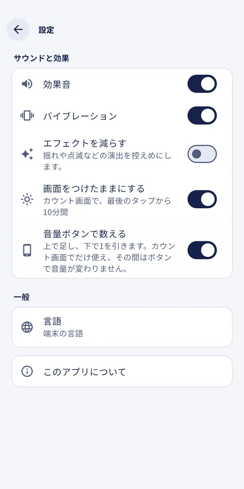
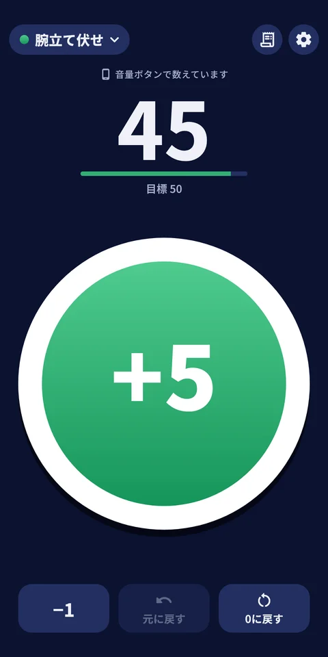
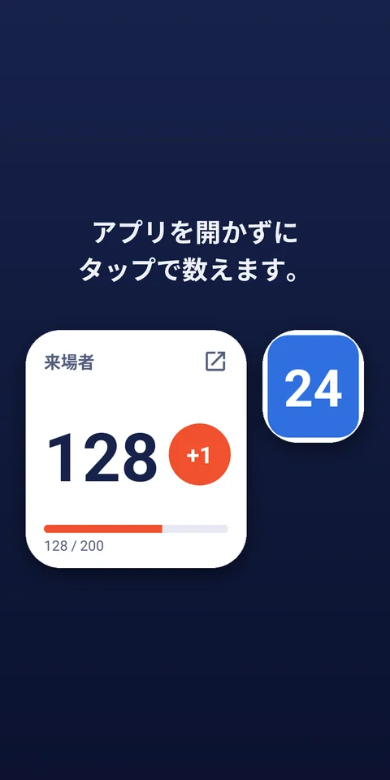

TapAlotは、ひとつずつ数えるものなら何にでも使えるカウンター（数取器）アプリです。大きなボタンをタップすると、指が触れた瞬間に数がひとつ増えます。数えるものごとにカウンターを分けられ、数えた記録は「記録」で見られます。
スクリーンショット





主な機能
- 大きなボタンがひとつ 大きな＋1ボタンは指が触れた瞬間に数え、数字が少し弾みます。その下に「1を引く」「元に戻す」「0に戻す」があります。「0に戻す」は先に確認し、今の数は記録に残るので、「元に戻す」で戻せます。「1回で足す数」は、カウンターごとに1から9999まで決められます。
- カウンターは複数 必要なだけカウンターを作れます。カウンターごとに名前、色（8色から選択）、「開始の数」、「1回で足す数」、お好みで「目標」を設定します。「何回ごとに知らせる」をオンにすると、数がその倍数を超えるたびに音と振動でお知らせします。10なら10・20・30で知らせます。「0より下も数える」は初期設定ではオフで、オンにすると「1を引く」で0より下まで減らせます。上のバーのカウンター名をタップすると一覧が開き、ドラッグで順番を入れ替えられます。アプリを開くと、最後に使ったカウンターがすぐ表示されます。削除したカウンターは7日間「削除したカウンター」に残り、「復元」で戻せます。
- 目標 カウンターに「目標」を設定すると、数字の下に進み具合のバーが出ます。目標に届くと「目標達成」と表示され、目標用の音と振動が鳴ります。
- タップするたびに保存 1回タップするごとにすぐ保存されるので、手動で保存する必要はありません。「記録」では、カウンターの記録を日ごとにまとめ、その日に数えた数、最後の数、0に戻した回数を表示します。日付を開くと、タップごとの時刻も見られます。古い記録は消さずに日ごとの合計にまとめ、「記録を消す」は、そのカウンターの記録だけを消します。Androidの自動バックアップをオンにしている端末では、カウンターと記録がバックアップにも含まれることがあります。端末内には1日1回、保管用のコピーも別に作ります。
- エクスポート 「記録」の「エクスポート(CSV)」は、そのカウンターの記録を共有画面から送るか、端末にファイルとして保存できます。「カウンター」一覧の「すべてエクスポート(CSV)」は、すべてのカウンターの記録が対象です。列は、カウンター、日付、時刻、変化、増減、数、操作元です。
- ホーム画面ウィジェット アプリを開かなくても、ホーム画面でタップして数えられます。「アプリを開く」アイコン以外ならどこをタップしても、「1回で足す数」の分だけ増えます。1×1まで小さくでき、広げるとカウンター名と数、目標の進み具合も表示されます。置いたばかりのウィジェットには、最後に使ったカウンターが入ります。別のカウンターをホーム画面に置くには、「カウンターを編集」で「ホーム画面に追加」をタップします。ウィジェットをタップすると、「バイブレーション」がオンのときは短く振動し、音は鳴らず、「記録」には「ウィジェット」として残ります。
- 音量ボタンと画面 設定で「音量ボタンで数える」をオンにすると、上ボタンで足し、下ボタンで1を引きます。カウント画面が表示されている間だけ働き、それ以外では普段どおり音量が変わります。「画面をつけたままにする」は、カウント画面で最後にタップしてから10分間、画面を消えにくくします。
- 見た目と音 数えるたびに丸みのある木の音、目標に届くとマリンバの音、短い振動が鳴ります。設定の「サウンドと効果」には「効果音」と「バイブレーション」のスイッチが別々にあり、「エフェクトを減らす」を選ぶと数字が弾まなくなります。端末がダークモードのときは、画面も暗い配色になります。
- ご利用について 定期購読も、支払いで開く機能も、アプリ内での購入もなく、ウィジェットまで全機能をそのまま使えます。広告は画面の最下部に出るバナーひとつだけで、大きなボタンとは十分に離してあり、画面いっぱいに出る広告はありません。アカウントなしでオフラインで動き、カウンターと記録は端末に残ります。表示言語は日本語・英語・韓国語・中国語の簡体字と繁体字で、「言語」から切り替えられます。
対応プラットフォーム
ユーザーマニュアル
TapAlot アプリのユーザーマニュアルをご確認いただけます。
プライバシーポリシー
TapAlot アプリのプライバシーポリシーをご覧いただけます。